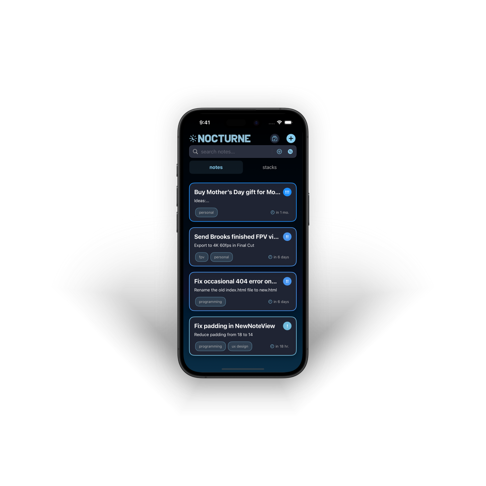

a place to collect your thoughts.
capture ideas, organize them into stacks, and receive gentle reminders when it's time to revisit them.


about nocturne
nocturne is designed to help your ideas shine.
it's a place to collect your thoughts, to reflect on your vision, and focus on what really matters.
nocturne puts your thoughts front and center, helping you to do what you do best.
it stays out of your way, with an experience so sleek and effortless that you forget you're even
using it.
unlike traditional note apps that let ideas get buried and forgotten, nocturne gently brings important thoughts back to your attention when you need them most, and helps you declutter your mind.
available exclusively for iPhone*.
features
customizable stacks
organize notes into beautiful, color-coded stacks with custom icons that make visual organization intuitive and personal.
priority levels
assign low, medium, or high priority to your notes with visual indicators, and easily sort your notes by priority to focus on what matters most.
gentle reminders
set optional reminders for notes and review them when the time is right with a quick and intuitive review system.
immersive dark interface
a midnight-inspired theme with subtle blue accents provides a calming environment for your thoughts, day or night.
smart search
find notes instantly with powerful search across titles, content, tags, and even priority levels.
tactile interaction
thoughtful haptic feedback throughout creates a satisfying, physical connection to your digital notes.
gallery

create new notes with ease

browse notes within stacks

create personalized stacks
* nocturne runs on iOS 15 or later.